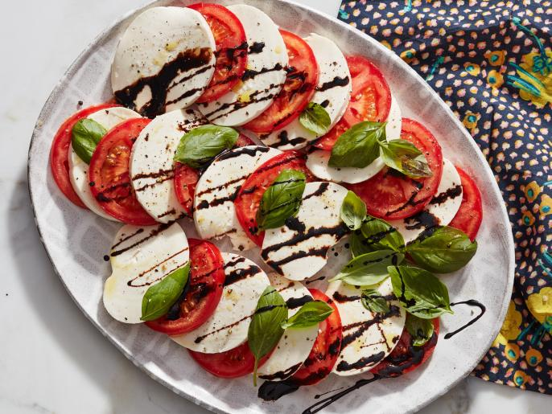

Caprese Salad

Total Time: 1 hr
Yield: 8 servings
Ingredients
- 2 cups balsamic vinegar
- 3 tomatoes
- 12 oz fresh mozzarella, thickly sliced
- Large bunch fresh basil leaves
- Olive oil
- Pinch kosher salt
- Pinch ground black pepper
Directions
- Measure the balsamic vinegar and pour into a saucepan. Bring it to a gentle boil over a low heat. Cook it until the balsamic vinegar has reduced to a nice thick glaze (but still pourable), about 15 minutes. Oh and one other thing, your house will stink. But it's a good kind of stink, it's a vinegary stink. Allow the reduction to cool to room temperature before you serve it.
- When you are ready to assemble the salad, cut the tomatoes into thick slices. Arrange them on a platter, alternating them with the mozzarella slices. Tuck the whole basil leaves in between the tomato and cheese slices.
- Drizzle on the gorgeous, almost black balsamic reduction. Then drizzle olive oil in a thin stream over the top. Finally, sprinkle on salt and pepper.